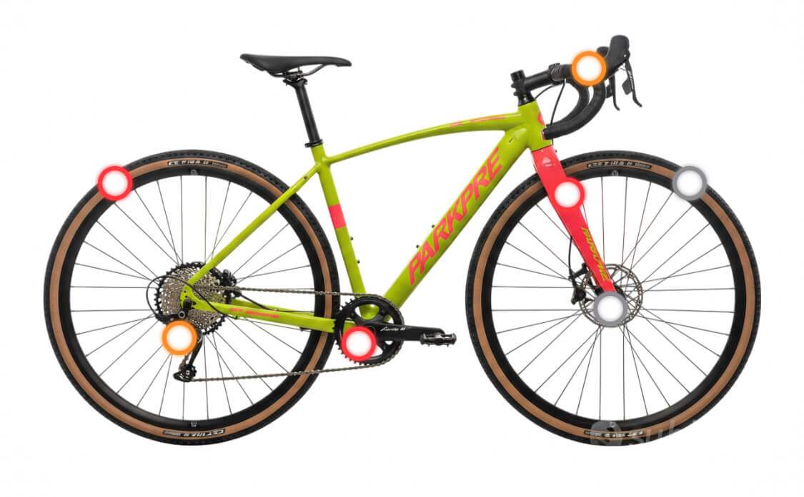
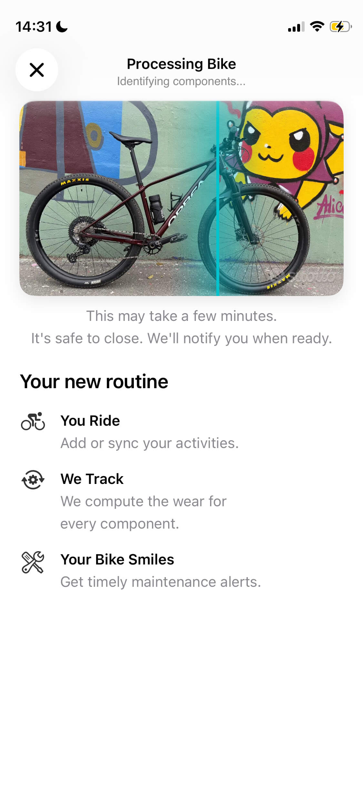
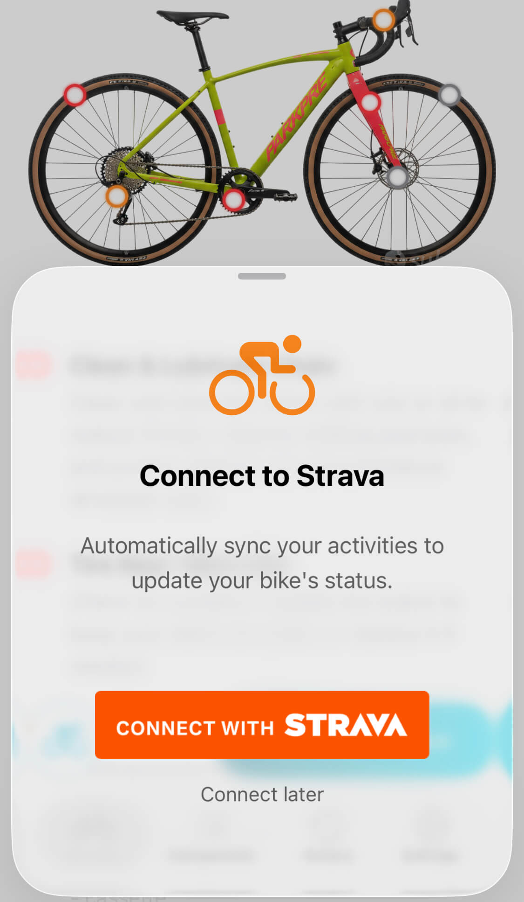
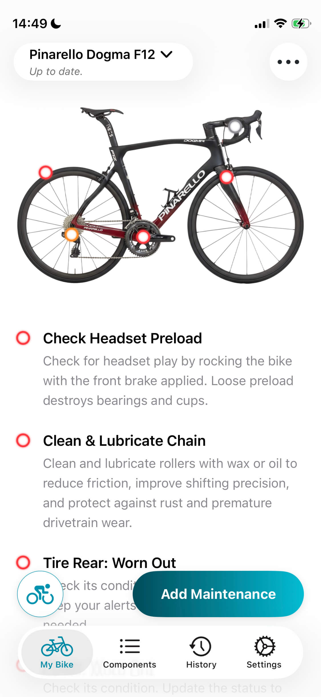

Keep your bike in perfect shape.
Track component wear automatically and get alerts before parts fail. Ride with total confidence.


Smart Setup.
Snap a photo. Let our AI identify your bike and components and build your digital twin.

Auto-Sync with Strava.
Connect once. The app automatically imports your rides and updates component wear data.

Timely Maintenance Alerts.
Track wear on every part. Get precise service reminders to keep your bike safe and performing at its best.

Press & Media
BikeVet's mission is to make bicycle maintenance accessible, predictable, and even enjoyable. If you'd like to feature us, download our media kit below.
Download Media Kit (.zip)Stop guessing, start tracking.
Download the app and ensure your bike is always ready for the road.